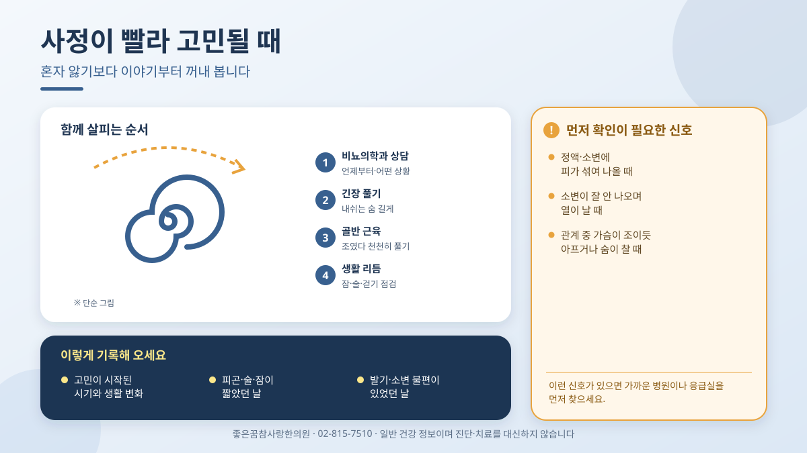

이종호 한의사 감수좋은꿈참사랑한의원 대표원장 (한의사 면허번호 19769)발행 2026-11-26 · 수정 2026-11-26
이 글의 차례
진료가 거의 끝나 갈 무렵, 진료실 문을 나서려던 분이 잠시 머뭇거리다 다시 의자에 앉습니다. "원장님, 이런 것도 여쭤봐도 되나요?" 그렇게 꺼내는 이야기가 사정이 너무 빨라 고민이라는 이야기일 때가 있습니다. 몇 해를 혼자 끙끙 앓다가 겨우 꺼낸 말이라는 것이 표정에서 느껴집니다.
조루는 생각보다 흔한 고민입니다. 하지만 말하기 부끄럽다는 이유로 병원 문턱을 넘지 못하고, 인터넷에서 검증되지 않은 제품을 찾아보다가 더 지치는 분이 많습니다. 이 글은 그 첫마디를 조금 더 쉽게 꺼낼 수 있도록 돕기 위해 썼습니다.
먼저 말씀드리고 싶은 것은 조루가 남자로서 부족하다는 뜻이 아니라는 점입니다. 몸의 예민함, 긴장, 습관, 다른 몸 상태가 함께 맞물려 나타나는 상태이고, 상의하고 살필 수 있는 부분이 분명히 있습니다.
이 글에서는 조루가 어떤 상태인지, 왜 생기는지, 비뇨의학과 진료와 생활에서 무엇을 함께 살피면 좋은지, 그리고 한의원에서는 어떤 부분을 곁에서 살필 수 있는지를 차근차근 말씀드리겠습니다.
조루는 어떤 상태를 말하나요
조루는 사정을 스스로 조절하기 어려워 원하는 것보다 빨리 사정하게 되고, 그 때문에 본인이나 배우자가 고민과 부담을 느끼는 상태를 말합니다. 시간이 몇 분인지보다 조절이 어렵다는 느낌과 그로 인한 괴로움이 더 중요한 기준입니다.
처음 성생활을 시작할 때부터 이어진 경우가 있고, 예전에는 괜찮았는데 어느 시기부터 달라진 경우가 있습니다. 두 경우는 원인을 살피는 방향이 조금 다릅니다. 그래서 진료실에서는 처음부터였는지, 언제부터였는지를 가장 먼저 여쭙습니다.
특정 상황에서만 그런 경우도 있습니다. 오랜만의 관계, 피곤한 날, 긴장되는 상황에서만 빨라진다면 몸의 문제보다 그날의 상태와 마음의 영향이 큰 경우가 많습니다.
왜 사정이 빨라질까요?
사정은 뇌와 척수, 골반의 신경과 근육이 함께 만드는 반사입니다. 이 반사가 유난히 예민하게 움직이면 작은 자극에도 빨리 사정하게 됩니다. 타고난 예민함이 있는 분도 있고, 긴장으로 예민함이 커지는 분도 있습니다.
긴장과 불안은 조루와 가깝습니다. 이번에도 빨리 끝나면 어쩌나 하는 걱정이 몸을 더 긴장시키고, 긴장이 사정을 더 앞당기는 흐름이 생깁니다. 한 번의 경험이 다음 관계의 걱정이 되어 고리처럼 이어지기 쉽습니다.
몸의 다른 상태도 영향을 줍니다. 발기가 잘 유지되지 않을까 걱정되면 서두르게 되고, 전립선에 염증이 있거나 갑상선 기능이 달라졌을 때도 사정이 빨라질 수 있다고 알려져 있습니다. 과로와 수면 부족, 잦은 음주도 몸의 조절을 흔듭니다.
조루와 헷갈리기 쉬운 상태
발기부전과 조루는 함께 오는 경우가 많아 헷갈립니다. 발기가 유지되지 않을까 봐 서두르다 보니 사정이 빨라지는 경우라면, 발기 쪽을 먼저 살피는 것이 순서일 수 있습니다. 둘 중 무엇이 먼저인지 나눠 이야기해 주시면 진료 방향을 정하기 쉽습니다.
회음부나 아랫배가 뻐근하고 사정 뒤에 통증이 있다면 만성 전립선염 같은 골반 쪽 불편을 함께 살펴봐야 합니다. 소변이 시원하지 않거나 잦은 것도 함께 있다면 비뇨의학과에서 확인을 받으시는 것이 좋습니다.
배우자와의 기대 차이 때문에 고민이 시작된 경우도 있습니다. 실제 시간은 평균 범위인데 비교와 걱정 때문에 조루라고 여기시는 분도 계십니다. 이런 경우에는 정보를 바로잡고 대화를 돕는 것만으로도 고민이 한결 줄어듭니다.
비뇨의학과에서는 어떤 이야기를 나누나요
조루 고민이 있다면 비뇨의학과에서 상담을 받아 보시는 것이 출발점입니다. 진료실에서는 언제부터였는지, 어떤 상황에서 그런지, 발기와 소변에 불편은 없는지를 여쭙고, 필요하면 전립선이나 호르몬 관련 검사를 권하기도 합니다.
비뇨의학과에서는 상태에 따라 먹는 약이나 바르는 약, 행동 요법 등을 상의하게 됩니다. 어떤 방법이 맞는지는 진찰한 선생님과 이야기해 정하시면 됩니다. 인터넷에서 파는 출처가 불분명한 제품은 성분을 알 수 없어 몸에 부담이 될 수 있으니 피하시길 권합니다.
필요하다면 성 상담이나 부부 상담을 함께 권받으실 수도 있습니다. 관계에서 생긴 긴장과 걱정은 혼자보다 둘이 함께 이야기할 때 풀리는 경우가 많습니다.
긴장을 내려놓는 연습
조루 고민이 있는 분들은 관계 중에 몸이 잔뜩 굳어 있는 경우가 많습니다. 숨을 참고, 어깨와 배에 힘이 들어가고, 결과에만 마음이 쏠립니다. 이 긴장이 사정 반사를 더 예민하게 만듭니다.
평소에 숨을 길게 내쉬는 연습을 해 두시면 도움이 됩니다. 들이쉬는 숨보다 내쉬는 숨을 조금 더 길게, 하루 몇 분씩 이어 가 보세요. 몸이 느슨해지는 감각을 익혀 두면 긴장되는 순간에도 그 감각을 떠올리기가 쉬워집니다.
골반 바닥 근육 운동도 함께 권합니다. 소변을 참듯이 아랫부분을 살짝 조였다가 천천히 푸는 동작을 하루 몇 차례 반복하는 것입니다. 조이는 것보다 푸는 감각을 익히는 데 마음을 두시면 좋습니다. 통증이 있다면 멈추고 상의해 주세요.
생활이 몸의 조절에 주는 영향
잠이 부족하고 과로가 이어지면 몸의 조절이 흔들립니다. 조루 고민이 있는 분들에게 요즘 잠은 어떠신지, 일은 얼마나 바쁘신지를 꼭 여쭙는 이유입니다. 몸이 지쳐 있으면 관계에서도 여유를 갖기 어렵습니다.
술은 처음에는 긴장을 풀어 주는 듯하지만, 잦은 음주는 발기와 몸의 조절을 함께 흔듭니다. 담배도 혈관과 신경에 부담을 줍니다. 술자리를 줄이고 금연을 시작하는 것은 관계뿐 아니라 몸 전체에 도움이 되는 일입니다.
규칙적인 걷기와 하체 근력 운동은 골반 쪽 혈액 순환과 체력에 도움이 됩니다. 오래 앉아 일하는 분이라면 한 시간에 한 번 일어나 몇 걸음 걷는 것만으로도 골반 주변이 덜 굳습니다. 일주일에 세 번, 30분 정도 숨이 약간 찰 만큼 걷는 것부터 시작해 보세요.
배우자와 나누는 대화
조루 고민은 혼자의 문제처럼 느껴지지만, 실제로는 두 사람의 이야기입니다. 말하지 않고 피하다 보면 배우자는 거절당했다고 느끼고, 본인은 더 위축되는 흐름이 생기기 쉽습니다.
비난이나 비교 대신 서로 무엇이 편한지, 어떤 순간이 부담스러운지를 차분히 나눠 보세요. 관계의 목표를 시간에 두기보다 서로 편안하고 가까워지는 데 두면 긴장이 한결 줄어듭니다. 대화가 어렵다면 상담의 도움을 받는 것도 좋은 방법입니다.
진료에 배우자와 함께 오셔도 괜찮습니다. 함께 이야기를 들으면 서로의 오해가 풀리고, 생활에서 함께 바꿔 볼 것을 정하기도 쉬워집니다. 혼자 오시는 것이 편하다면 그것도 충분히 괜찮습니다.
관계 전 일부러 술을 마셔 긴장을 풀려는 분도 계신데, 술은 감각을 무디게 하는 동시에 발기와 조절을 흔들 수 있어 권하지 않습니다. 대신 따뜻한 샤워나 가벼운 스트레칭처럼 몸을 먼저 느슨하게 하는 방법을 써 보세요.
조루 고민이 있는 분들이 자주 헷갈리는 것
첫째, 정력이 약해서 생긴다는 생각입니다. 조루는 기운이 약하다는 뜻이 아니라 사정 반사의 예민함과 긴장, 생활이 맞물린 상태인 경우가 많습니다. 기운을 북돋는다는 제품을 찾기 전에 언제, 어떤 상황에서 그런지를 먼저 살펴보는 것이 좋습니다.
둘째, 관계를 피하면 나아진다는 생각입니다. 오래 피하다 보면 다음 관계가 더 긴장되고, 긴장이 사정을 더 앞당기는 흐름이 생기기 쉽습니다. 부담을 덜어 내되 대화와 가까움은 이어 가시는 편이 좋습니다.
셋째, 한 번 좋아지면 다시는 그렇지 않을 거라는 기대입니다. 피곤한 날이나 긴장되는 날에는 예전처럼 빨라질 수 있습니다. 그런 날이 있다고 해서 다시 처음으로 돌아간 것은 아니니 너무 낙담하지 않으셨으면 합니다.
시기에 따라 달라지는 고민
성생활을 시작한 지 얼마 되지 않았을 때는 경험이 적고 긴장이 커서 빨라지는 경우가 흔합니다. 이런 경우에는 시간이 지나며 몸이 익숙해지면서 자연스레 달라지기도 합니다.
예전에는 괜찮다가 중년 무렵부터 달라졌다면 발기 변화, 전립선, 혈압이나 혈당 같은 몸의 변화가 함께 있는지 살펴보는 것이 좋습니다. 건강검진 결과지를 함께 가져오시면 이야기가 수월합니다.
출산이나 이직, 이사처럼 생활이 크게 바뀐 시기에 고민이 시작된 분도 있습니다. 잠과 여유가 줄어든 시기라면 몸의 조절보다 생활의 무게를 먼저 덜어 내는 것이 순서일 수 있습니다.
먼저 이렇게 여쭙니다
처음 오시면 대략 이런 내용을 여쭙니다. 말씀하시기 편한 만큼만 하셔도 괜찮습니다.
- 고민은 처음부터였나요, 어느 시기부터 달라졌나요?
- 특정 상황에서만 그런가요, 늘 비슷한가요?
- 발기가 유지되지 않거나 소변이 불편한 점은 없나요?
- 잠, 피로, 일의 긴장은 요즘 어떠신가요?
- 술과 담배는 어느 정도 하시나요?
- 비뇨의학과 진료나 드시는 약이 있으신가요?
정확한 답이 없어도 괜찮습니다. 이야기를 꺼내신 것만으로도 이미 첫걸음을 떼신 겁니다.
일상에서 먼저 해 볼 수 있는 것
- 잠드는 시각을 일정하게 맞추고 과로 줄이기
- 하루 몇 분 내쉬는 숨을 길게 하는 호흡 연습
- 골반 바닥 근육을 조였다 천천히 푸는 연습
- 일주일에 세 번 30분 걷기와 하체 근력 운동
- 술자리 횟수 줄이기, 금연 시작하기
- 출처가 불분명한 제품은 쓰지 않기
한꺼번에 다 하려 하지 마시고 하나씩 골라 몇 주 이어 가 보세요. 몸의 긴장이 조금씩 풀리면 관계에 대한 걱정도 함께 가벼워지는 경우가 많습니다.
한의원에서 함께 살필 수 있는 경우
- 긴장하면 몸이 쉽게 굳고 가슴이 두근거리며 잠이 얕은 경우
- 과로와 피로가 쌓여 기운이 떨어진 느낌이 이어지는 경우
- 아랫배와 손발이 차고 허리가 무거운 경우
- 회음부와 아랫배가 뻐근하고 소변 뒤에도 개운하지 않은 경우
좋은꿈참사랑한의원에서는 진찰을 마친 뒤 긴장과 잠, 피로, 냉기와 골반 쪽 불편을 함께 보고 지금 상태에 맞는 방향을 정합니다. 침이나 온열 관리, 한약 상담 가운데 무엇이 맞는지는 진찰한 내용을 바탕으로 정합니다.
한약을 상의할 때는 드시는 약을 모두 확인하고 신중하게 정합니다. 비뇨의학과 진료는 그대로 이어 가시고, 처방받은 약은 상의 없이 멈추지 않으시도록 안내합니다. 한의원 진료는 비뇨의학과 진료를 대신하는 것이 아니라 곁에서 몸 전체를 함께 살피는 것입니다.
이렇게 기록해 오시면 상담이 쉬워집니다
- 고민이 시작된 시기와 그 무렵의 생활 변화
- 피곤했던 날, 잠이 짧았던 날, 술을 마신 날
- 발기나 소변에 불편이 있었던 날
- 긴장하거나 걱정이 컸던 상황
- 비뇨의학과에서 받은 검사와 처방
기록은 간단해도 충분하고, 휴대폰 메모에 날짜와 한두 단어만 남겨도 됩니다. 남에게 보이기 싫으시면 알아볼 수 있는 표시만 해 두셔도 괜찮습니다. 몇 주만 적어 보셔도 피곤하고 잠이 짧은 날과 고민이 겹치는지가 보이기 시작합니다.
혼자 감당하지 않으셨으면
조루는 이야기를 꺼내기까지가 가장 어려운 고민입니다. 그 말을 꺼내신 순간부터 이미 해결을 향해 걸음을 떼신 것입니다. 부끄러워하실 일이 아닙니다. 많은 분이 같은 고민을 안고 계시고, 이야기를 나누다 보면 생각보다 살필 수 있는 부분이 많다는 것을 알게 되십니다.
이번 주에는 잠 하나, 호흡 연습 하나만 골라 보세요. 몸의 긴장이 조금씩 풀려 가는 흐름을 진료실에서 함께 살피겠습니다.
이런 증상은 먼저 확인이 필요합니다
- 정액이나 소변에 피가 섞여 나오거나 소변이 잘 나오지 않으면서 열이 나는 경우
- 관계 중이나 뒤에 가슴이 조이듯 아프거나 숨이 심하게 차는 경우
이런 신호가 있으면 한의원보다 가까운 병원이나 응급실을 먼저 찾으세요.
함께 읽으면 좋은 글
- 발기가 잘 되지 않거나 유지되지 않을 때(발기부전)는 무엇을 살피고 어디서부터 시작하나요?
- 회음부와 아랫배가 뻐근하고 소변 뒤에도 불편한 만성 전립선염(만성 골반통)은 어떻게 살피나요?
- 40~50대 남성이 기운과 의욕이 떨어지고 잠·뱃살이 달라질 때(남성 갱년기)는 무엇을 살피나요?
- 시험이나 발표만 앞두면 손이 떨리고 머리가 하얘지는 수행 불안은 어떻게 살피나요?
- 불안한 마음과 몸이 긴장한 느낌은 어떻게 나눠서 이야기하나요?

여쭙는 것
- 고민은 처음부터였나요, 어느 시기부터 달라졌나요?
- 특정 상황에서만 그런가요, 늘 비슷한가요?
- 발기가 유지되지 않거나 소변이 불편한 점은 없나요?
생활에서 해 볼 것
- 잠드는 시각을 일정하게 맞추고 과로 줄이기
- 하루 몇 분 내쉬는 숨을 길게 하는 호흡 연습
- 골반 바닥 근육을 조였다 천천히 푸는 연습
한의원에서 함께 살필 것
- 긴장하면 몸이 쉽게 굳고 가슴이 두근거리며 잠이 얕은 경우
- 과로와 피로가 쌓여 기운이 떨어진 느낌이 이어지는 경우
- 아랫배와 손발이 차고 허리가 무거운 경우
먼저 확인이 필요한 신호
- 정액이나 소변에 피가 섞여 나오거나 소변이 잘 나오지 않으면서 열이 나는 경우
- 관계 중이나 뒤에 가슴이 조이듯 아프거나 숨이 심하게 차는 경우
한눈에 보는 표
| 구분 | 핵심 |
|---|---|
| 여쭙는 것 | 고민은 처음부터였나요, 어느 시기부터 달라졌나요? 특정 상황에서만 그런가요, 늘 비슷한가요? |
| 생활에서 해 볼 것 | 잠드는 시각을 일정하게 맞추고 과로 줄이기 하루 몇 분 내쉬는 숨을 길게 하는 호흡 연습 |
| 한의원에서 함께 살필 것 | 긴장하면 몸이 쉽게 굳고 가슴이 두근거리며 잠이 얕은 경우 과로와 피로가 쌓여 기운이 떨어진 느낌이 이어지는 경우 |
| 먼저 확인이 필요한 신호 | 정액이나 소변에 피가 섞여 나오거나 소변이 잘 나오지 않으면서 열이 나는 경우 관계 중이나 뒤에 가슴이 조이듯 아프거나 숨이 심하게 차는 경우 |
자주 묻는 질문
몇 분 안에 사정하면 조루인가요?
시간만으로 정하지는 않습니다. 사정을 스스로 조절하기 어렵고, 그 때문에 본인이나 배우자가 고민과 부담을 느끼는지가 더 중요한 기준입니다. 걱정되신다면 비뇨의학과에서 상담을 받아 보세요.
조루를 한의원에서 상담해도 되나요?
상담하실 수 있습니다. 비뇨의학과 진료는 그대로 이어 가시고, 한의원에서는 긴장과 잠, 피로, 냉기, 골반 쪽 불편처럼 몸 전체의 흐름을 함께 살핍니다.
인터넷에서 파는 제품을 써 봐도 될까요?
출처와 성분이 불분명한 제품은 몸에 부담이 될 수 있어 권하지 않습니다. 약이 필요하다면 비뇨의학과에서 상의하시는 것이 안전합니다.
한약과 비뇨의학과 약을 함께 먹어도 되나요?
드시는 약을 모두 확인하고 신중하게 정합니다. 약 이름을 알려 주시면 함께 살펴보고, 필요하면 처방한 선생님과 상의하시도록 안내합니다.
좋은꿈참사랑한의원은 재진 때 지난번 이야기부터 이어서 여쭙니다. 진료시간과 예약은 오시는 길에서 확인하세요.
어디서 상담받을 수 있나요?
좋은꿈참사랑한의원은 서울 동작구 만양로2길 2 신성빌딩 3층·5층(서울 동작구 상도동, 7호선 상도역 3번 출구 근처)에 있습니다. 한의사 3명(이종호 대표원장, 조영기 수석진료원장, 정원영 진료원장)이 진료합니다. 진료시간은 평일 09:30~20:00(점심 13:00~14:00), 토·일·공휴일 09:30~15:00이며, 방문 전 전화로 확인을 권합니다. 예약은 네이버 예약, 카카오톡 상담, 전화 02-815-7510로 받습니다.
이 글은 일반적인 건강 정보이며 개인의 진단이나 치료를 대신하지 않습니다. 증상이 있거나 복용 중인 약이 있다면 진료를 통해 확인하세요. 치료 효과는 개인마다 다를 수 있습니다.
작성 기준: 일반적으로 알려져 있는 건강 정보를 참고해 정리했습니다(대표원장 감수). 증상 기록은 1~2주 동안 하루 1회, 비슷한 시간에 적어 오시면 지난 상태와 비교하기 쉽습니다.